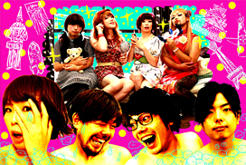

MINAMI WHEEL 2年連続出演！ eo Music Try 2010 グランプリ獲得！
大阪で話題沸騰中！胸キュン・パーティーは終わらない！！トキメキ・ハーコー・ポップ・バンド
(ex.エニクスパルプンテ)＜PROFILE＞ L→R
まつきょん(松岡恭子)(Vo.Gt.Key.) カンちゃんa.k.a上林利博(Dr.)
大水辰吾(Vo.Gt.) 緑谷トム(Ba.)
アーティスト公式サイトライブ・メディア情報

関西最大級の投票参加型コンテスト”eo Music Try2010”でのグランプリ、MINAMI WHEELに２年連続出演など、 パッションが溢れだす圧倒的なライブ･パフォーマンスと、トキメキが止まらない・ど直球のJ-POPが、関西人の心をガッチリキャッチ！！
デビュー前にも関わらずラジオや地上波TVなどでも楽曲が多数オンエアされ、デビューが最も待望されていたユナイテッドモンモンサンが遂に動き出す！
＜Biography＞
2002年 6月
音楽専門学校の同級生で結成
2007年某日
大水(Gt./Vo.)を中心に一度きりの思い出作りのため結成。(他3名)
2007年
初ライブ…偶然ライブを見に来ていた松岡(Vo.)が「なんでもするからバンドに入れてくれ」と懇願
→ベーシスト!?として加入。
2008年
デモCD「エニクスパルプンテの激情」発売。
松岡が歌いたいと言い出し、ベース･ボーカルに昇格、ツインボーカルに。
2009年
自主CD『EPP.EP』発売。松岡が「ベース弾きたくない」宣言。
緑谷も前から参加したがっていたので、ベーシストとして加入。
FM802主催 ”MUSIC CHALLENGE”にて、松岡(Vo.)がソロでファイナリストに選出。
扇町para-diceの1周年記念イベントとして初のワンマンライブを開催。狭い会場なので割とパンパンになる。
自主CD「8ビートか、否か。」を発売。
”ひらくドア”の企画で初の東京遠征。
2010年
前ドラムの脱退から数カ月の時を経て、上林がドラムとして加入。ようやく今のメンバーに固まる。
2010年
”THE ラブ人間”主催サーキットイベント”下北沢にて”に出演。
東京のライブでも盛り上がったので楽しくなる。
2010年
FM802主催”MINAMI WHEEL 2010”に初参加(松岡はソロでも出演)。
見放題コンピレーションCD”ここにある音楽２”に参加。
（”MINAMI WHEEL 2010”期間中に3000枚無料配布される。）
関西最大級の音楽コンテスト”eo Music Try 2010”でグランプリ受賞。
2011年
全国リリース前にも関わらず、FM802”RADIO INFINITY”にゲスト出演。
100円シングル「さよなら、ビッグベイビーさん。」を発売。レコ発ライブではラブ人間などが参加。
十三ファンダンゴがパンパン。
松岡の喉の手術のため、2ヶ月間の活動休止期間に入る。
『ROCK’N FES ロックの学園WEST ROCK’N FIVE「 MORNING ROCK」 』に参加。
梅田HEP FIVE前で朝から爆音を鳴らす。
FM802主催”LIVE∞INFINITY”に出演。ふくろうず、HAPPY BIRTHDAYと共演。
大阪ライブサーキット「見放題2011」に出演。入場規制がかかったとの噂も聴こえてくる。
見放題コンピレーションCD”ここにある音楽３”に参加。
関西TV音楽番組”ミュージャック”出演。
オワリカラのレコ発ツアー大阪ファイナルにゲストとして出演。オワリカラ、赤い公園とのスリーマンライブ。
大阪ライブサーキット”STREET STYLE MUSIC 心斎橋 2011”出演
FM802主催「MINAMI WHEEL 2011」に参加
⇒バンド名をエニクスパルプンテから、ユナイテッドモンモンサンに電撃改名！
2011年12月
デビュー･ミニ･アルバム『脱。』を全国リリース！！